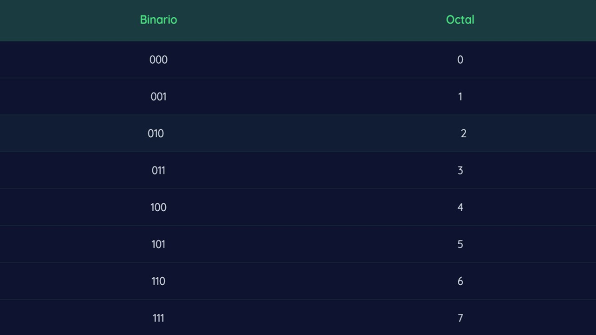
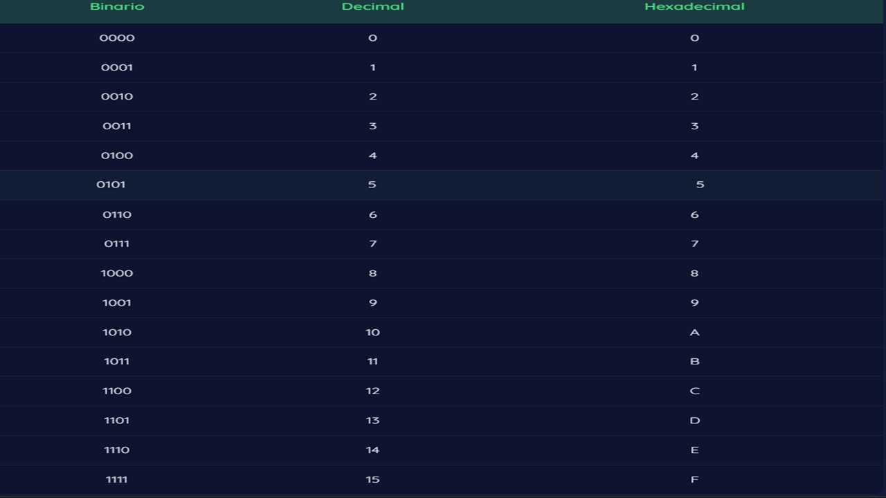

“Me acordé de lo que quizás sea la regla fundamental del progreso tecnológico: si algo se puede hacer, probablemente se hará, y posiblemente ya se haya hecho”. -Edward Snowden-
En informática, utilizamos diferentes sistemas numéricos para representar información. Cada sistema tiene su propia base y símbolos únicos.
Utiliza solo 0 y 1. Su base es 2 y es el sistema que usan las computadoras.
Utiliza los números del 0 al 7. Su base es 8 y cada dígito equivale a 3 bits.
Utiliza los números del 0 al 9 y las letras A-F. Su base es 16 y cada dígito equivale a 4 bits.
| Sistema Base | Ejemplo | Binario | Octal | Decimal | Hexadecimal |
|---|---|---|---|---|---|
| Binario | 1101010110₂ | 1101010110₂ | 1526₈ | 854₁₀ | 356₁₆ |
| Octal | 35₈ | 011101₂ | 35₈ | 29₁₀ | 1D₁₆ |
| Hexadecimal | 1A₁₆ | 00011010₂ | 32₈ | 26₁₀ | 1A₁₆ |
| Decimal | 50₁₀ | 110010₂ | 62₈ | 50₁₀ | 32₁₆ |
| EJERCICIO | BINARIO | DECIMAL | OCTAL | HEXADECIMAL |
|---|---|---|---|---|
| 1 | 100111 | 39 | 47 | 27 |
| 2 | 010101 | 21 | 25 | 15 |
| 3 | 011101 | 29 | 35 | 1D |
| 4 | 010111 | 23 | 27 | 17 |
| 5 | 101110 | 46 | 56 | 2E |
| 6 | 100101 | 37 | 45 | 25 |
| 7 | 111000101 | 453 | 705 | 1C5 |
| 8 | 111000 | 56 | 70 | 38 |
| 9 | 10100010 | 162 | 242 | A2 |
| 10 | 101010111100 | 2748 | 5274 | ABC |
| 11 | 00011111 | 31 | 037 | 1F |
| 12 | 111110101100 | 4012 | 7654 | FAC |
| 13 | 0010101100 | 700 | 1274 | AC |
| 14 | 111110100 | 500 | 764 | 1F4 |
| 15 | 001001011000 | 600 | 1130 | 258 |
| 16 | 011001000 | 200 | 310 | C8 |
| 17 | 010101111 | 175 | 257 | AF |
| 18 | 0110111 | 55 | 67 | 37 |
| 19 | 111101 | 61 | 75 | 3D |
| 20 | 101101111 | 367 | 557 | 16F |